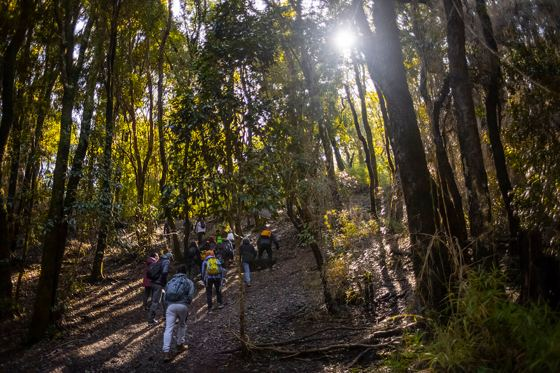
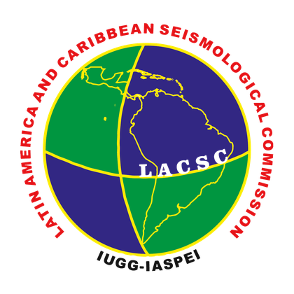
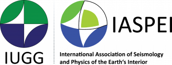
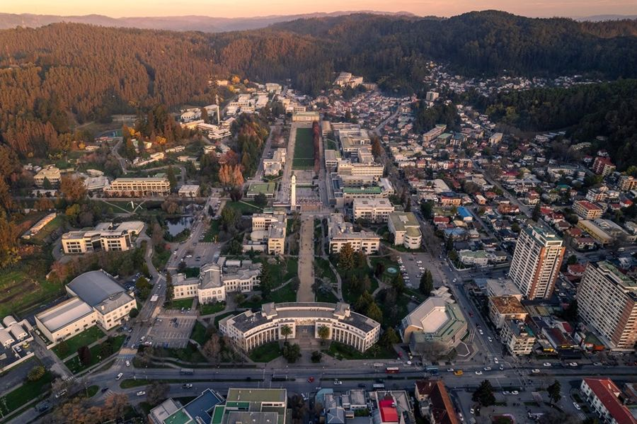
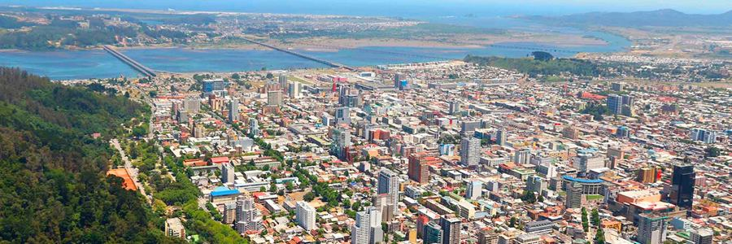
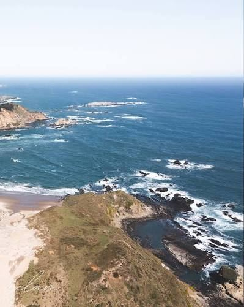
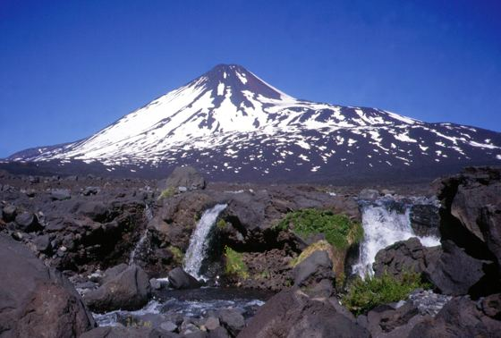
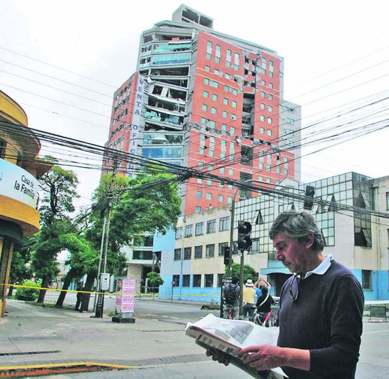

Campus Naturaleza
Visit to the Campus Naturaleza conservation area.
Universidad de Concepción · Concepción, Chile
October 2–6, 2028
The Latin American and Caribbean Seismological Commission meets in Concepción: technical sessions, field trips to remarkable geological sites and community activities.
Organized under the umbrella of


We are delighted to invite you to the VII Assembly of the Latin American and Caribbean Seismological Commission (LACSC), to be held in 2028 at the Universidad de Concepción (UdeC).
The assembly will bring together leading researchers, professionals and students from around the world to share knowledge, foster collaboration and explore advances in seismology and earth sciences.
Our organizing committee, composed of experts from major Chilean universities, is preparing an inspiring program featuring technical sessions, field trips to remarkable geological sites and engaging community activities.
Beyond the scientific agenda, you will experience Chilean culture, cuisine and hospitality. We are committed to creating an inclusive and memorable event for all participants.
Mark your calendars: October 2–6, 2028.

A vibrant city, renowned for its scientific spirit and stunning natural surroundings.

Concepción offers modern infrastructure, convenient transportation and a welcoming environment. The city sits on the Chilean margin, where the subduction of the Nazca plate shapes both the landscape and the region’s seismic history.
That makes it a natural meeting point for a community that studies earthquakes, and a good base for exploring the geology of south-central Chile.
Four ways to see the seismic and volcanic landscape of Chile up close.

Visit to the Campus Naturaleza conservation area.

Coastal evidence of the seismic cycle and geology.

A visit to an active volcano.

A walking tour of the city and its earthquake legacy.
Researchers from four Chilean universities are organizing the assembly.